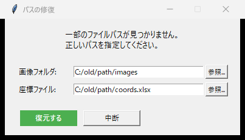

機能一覧¶
採点侍が搭載する機能の一覧です。
採点モード¶
マーク採点¶
Mark2 座標ファイルに基づき、OMR（光学マーク認識）でマークシートを自動読み取り・自動採点します。
記述式採点¶
スキャン画像上でマウスドラッグにより採点領域を設定。○×ボタンや数字キーで、記述式答案を採点します。
マーク＋記述 混合¶
マーク式と記述式が混在する試験を、1つのワークフローで統合処理。合計点も自動で合算します。
数学マーク採点（β）¶
共通テスト数学のような連鎖配点（複数桁設問）に対応。連続する複数のマーク行で1つの値（-24 など）を構成し、全行正解のときのみ得点する「完答」方式で採点します。
数学マーク採点はβ版です（v4.7.0-beta 系）
仕様が変わる可能性があります。成績処理に使用する場合は、必ず採点結果をご自身の目で確認してください。 不具合は Issues へお知らせください。
数学マーク採点（β）の概要¶
- 紙面: 各解答番号の行に
-, 0〜9, a, b, c, dの15マークを持つ専用テンプレートを使用します（起動画面で「🔢 数学マーク採点」を選択） - 正答データの書き方: 問題番号列に範囲表記「1-3」＋正答「-24」で3行を1問として採点。単独行に複数文字の正答（例: 問題番号「5」に「15」）を書けば、正答の文字数ぶん自動で行を割り付けるので範囲の手計算は不要です
- 採点ルール: グループ全行の完全一致で満点、それ以外は0点（完答）。無マーク・ダブルマークが1行でもあれば不正解
- 正答チェック: 正答データの選択時に登録内容を自動検証し、行割当・満点・警告を含むチェック報告と配布用の模範解答（いずれもMarkdown）を書き出します
- 集計・分析: 得点一覧・CTT分析・R連携も1問=1項目（例:「問1-3」）として集計されます
OMR（光学マーク認識）¶
| 機能 | 説明 |
|---|---|
| コーナーマーカー検出 | 射影変換による自動傾き補正 |
| 二値化 + 面積比率 | マーク有無を黒い面積の比率で判定 |
| K-means 認識（v4.5） | 7次元特徴量（ローカル5 + コンテキスト2）で「マーク済み / 空白」を自動分類 |
| K-means レポート | filled_ratio 分布 + PCA 散布図を HTML で可視化（画像間ラベル整合を正規化済み） |
| 閾値キャリブレーション | K-means クラスタリング + 大津の二値化法で閾値を自動最適化 |
| 手動微調整 | 自動推定が合わない場合、GUI で閾値を手動修正 |
 閾値キャリブレーション — 自動推定 + 手動微調整
閾値キャリブレーション — 自動推定 + 手動微調整
マークチェック¶
| 機能 | 説明 |
|---|---|
| 未マーク検出 | どの選択肢もマークされていない答案を自動検出 |
| ダブルマーク検出 | 複数の選択肢がマークされた答案を自動検出 |
| GUI 修正 | 検出されたエラーを 1 件ずつ確認し、画面上で修正 |
| グリッド高速表示 | 100件固定ページング + サムネイルキャッシュで大量データでも安定表示 |
| 白さキャッシュ連携 | OMR時に生成した whiteness_cache.json を読み込み、白さ順ソートを高速化 |
| 選択肢タブレビュー | 選択肢カテゴリで「薄い解答 / 濃い解答」タブを表示し、疑義ケースを上下端から集中的に確認 |
| 正答枠表示 | 正答（Answer Key）の選択肢位置に赤色の点線枠を表示し、修正判断を支援 |
 マークチェック — エラーの確認と修正
マークチェック — エラーの確認と修正
記述式採点¶
| 機能 | 説明 |
|---|---|
| 領域設定 | マウスドラッグで問題ごとの採点領域を指定 |
| ○× 判定 + 部分点 | ○×ボタン・ショートカットキー・数字キーで得点を入力 |
| 背景色フィードバック | 判定に応じて背景色が変化する視覚的フィードバック |
| 1枚ずつ / 一覧グリッド | 用途に応じて切り替えられる 2 つの採点表示モード |
| 未採点フィルタ | 1枚ずつモードで、未採点の答案のみ表示して採点漏れを防止 |
| クリーンプレビュー | マーク認識枠のないクリーンな画像でプレビュー表示し、手書き文字の視認性を向上 |
 グリッド一覧モード — 全生徒の解答を俯瞰しながら採点
グリッド一覧モード — 全生徒の解答を俯瞰しながら採点
出力・レポート¶
| 機能 | 説明 |
|---|---|
| 採点済み答案画像 | ○×△マーク・得点を答案画像に描画して出力 |
| 生徒別サマリー Excel | 各生徒の問題別得点を一覧にしたExcel |
| 試験統計 Excel | 全体の平均点・標準偏差・得点分布 |
| CTT 分析 PDF | α係数, P値(正答率), D値(識別力), I-T相関を算出しPDF化 |
| R エクスポート | exametrika 用の R データ形式でエクスポート |
システム機能¶
| 機能 | 説明 |
|---|---|
| PDF 入出力 | PDF 形式のスキャン画像に対応（PyMuPDF 使用） |
| セッション保存・復元 | 作業途中の状態を JSON で保存し、後から再開 |
| パス修復 | PC やフォルダを変更しても、パス修復ダイアログで復帰 |
| 氏名トリミング | 名簿画像の氏名領域を自動トリミング |
| クラッシュログ | 未処理例外をログファイルに記録し、原因調査を支援 |
| 描画設定カスタマイズ | ○×マーク、得点テキスト、合計点の表示を細かく調整 |

パス修復ダイアログ — フォルダ移動後の復旧